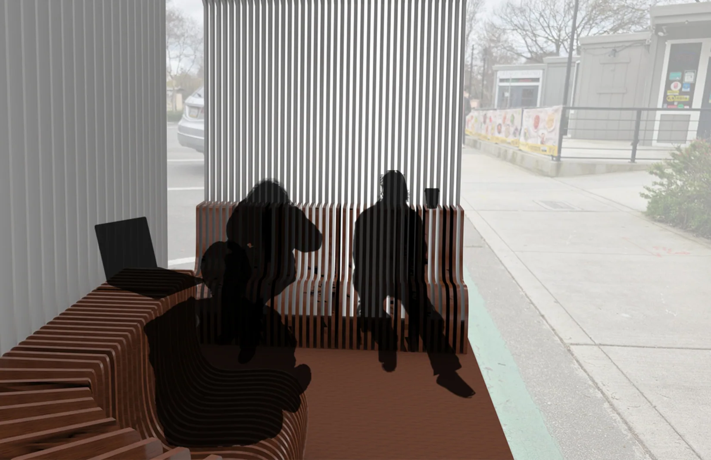
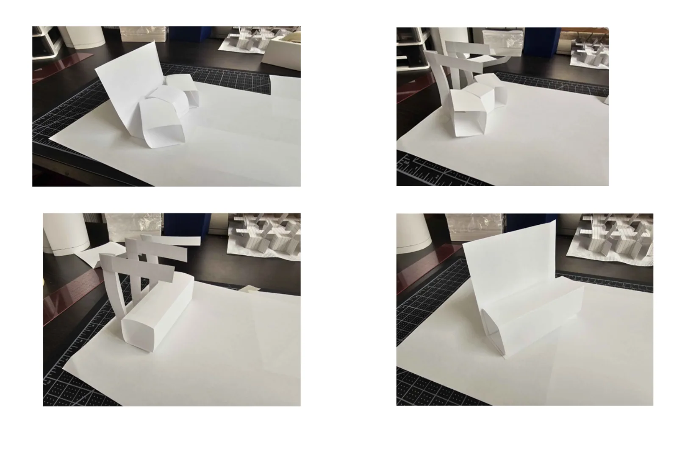
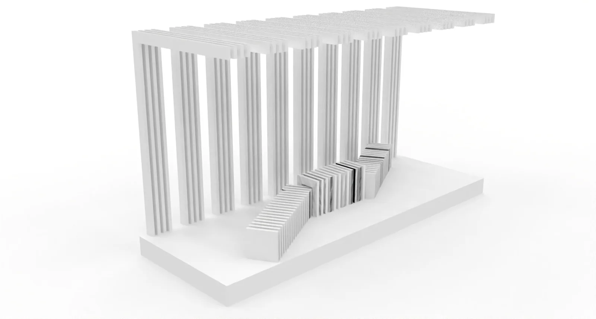
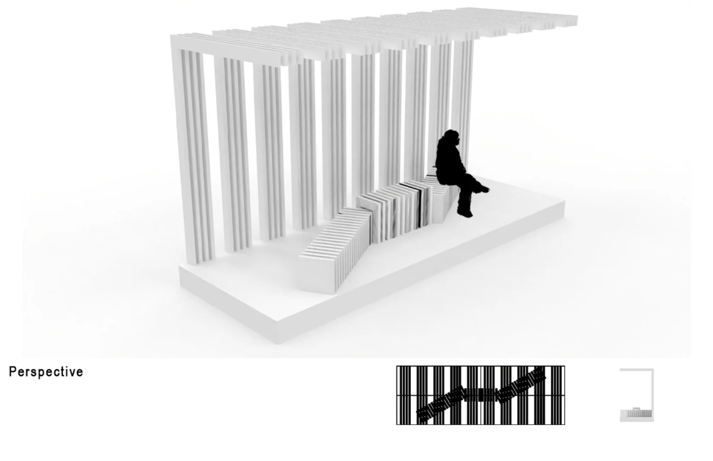
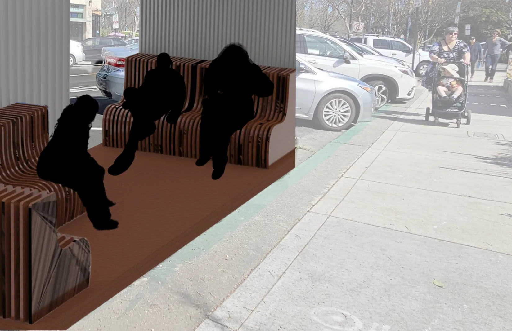

Public Seating & Shade
A spatial design study combining seating, vertical elements, and a shaded structure, developed across sketches, models, and site perspectives.

Sketching spatial possibilities
Early work documents multiple sketch concepts and small paper studies testing the relationship between a vertical element, seating, and circulation.

Model and refine
Four digital iterations and a final set of views were submitted for Project 2.2. The presentation shows a proposed row of seating elements beneath an overhead plane and vertical supports.


Visualizing an urban setting
Final perspective images place the seating and shade concept in a photographed streetscape, illustrating how the proposal could occupy a real public-facing location. These are conceptual composites, not built-installation photographs.
